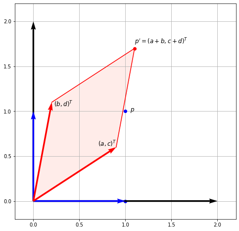
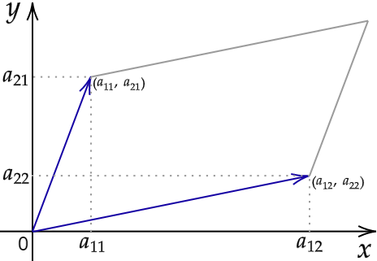

Theory
Contents
Theory#
Vector spaces#
An n-dimensional vector space \(V^n\) is a set of all n-tuples (sequences of \(n\) scalars) \((x_1, x_2, \dots, x_n)\) which we call points or vectors, such that \(V^n\) is closed under addition and scalar multiplication and these operations satisfy the following properties:
Associativity of addition: \(\mathbf{x} + (\mathbf{y} + \mathbf{z}) = (\mathbf{x} + \mathbf{y}) + \mathbf{z}\)
Commutativity of addition: \(\mathbf{x} + \mathbf{y} = \mathbf{y} + \mathbf{x}\)
There exists an element \(\mathbf{0} \in V^n\), called the zero vector, such that \(\mathbf{x} + \mathbf{0} = \mathbf{x}\) for all \(\mathbf{x} \in V^n\)
For all \(\mathbf{x} \in V^n\) there exists an inverse element \(-\mathbf{x} \in V^n\) such that \(\mathbf{x} + (-\mathbf{x}) = \mathbf{0}\)
Distributivity of scalar multiplication with respect to addition in \(V^n\): \(\alpha (\mathbf{x} + \mathbf{y}) = \alpha \mathbf{x} + \alpha \mathbf{y}\) for all \(x, y \in V^n\) and \(\alpha \in \mathbb{R}\)
Distributivity of scalar multiplication with respect to addition in \(\mathbb{R}\): \( (\alpha + \beta)\mathbf{x} = \alpha \mathbf{x} + \beta \mathbf{x} \)
Compatibility of multiplication: \(\alpha (\beta \mathbf{x}) = (\alpha \beta)\mathbf{x}\) for all \(\mathbf{x} \in V^n\) and \(\alpha, \beta \in \mathbb{R}\)
Identity element of scalar multiplication: \(1\mathbf{x} = \mathbf{x}\), where \(1\) denotes the multiplicative identity in \(\mathbb{R}\)
For a set to be closed under addition, it means that \( \mathbf{x} + \mathbf{y} \in V^n\) for all \(\mathbf{x}, \mathbf{y} \in V^n\). Or in words, a sum of two arbitrary vectors from \(V^n\) is also in \(V^n\). Similarly, for the set to be closed under scalar multiplication, \(\alpha \mathbf{x} \in V^n\) for all \(\alpha \in \mathbb{R}\) and \(\mathbf{x} \in V^n\). These two operations allow us to freely scale our vectors and to form linear combinations of vectors while still remaining in the same vector space.
Linear combination of vectors#
Let \(\mathbf{z} \in V^n\) and let \( \mathbf{u}_1, \mathbf{u}_2, \dots, \mathbf{u}_k\) also be vectors in \(V^n\). If we can write \(\mathbf{z}\) as:
for some scalars \(\alpha_1, \alpha_2, \dots, \alpha_k\), then we say that \(\mathbf{z}\) is a linear combination of a set of vectors \(\{ \mathbf{u}_1, \mathbf{u}_2, \dots, \mathbf{u}_k \}\).
We say that a set of vectors \(\{ \mathbf{u}_1, \mathbf{u}_2, \dots, \mathbf{u}_n \}\) is linearly independent iff vector \(\mathbf{u}_i\), \(i = 1, \dots, n\), cannot be written as a linear combination of the other vectors. More generally, a set of vectors \(\{ \mathbf{u}_1, \mathbf{u}_2, \dots, \mathbf{u}_n \}\) is linearly independent if
is possible only for \(\alpha_i = 0\).
Example#
Consider the following vectors in \(\mathbb{R}^3\):
Notice that the last 3 vectors can be written as a linear combination of the first 2 vectors. For example,
Spanning set & Basis#
Consider the following vectors in \(V^n\) whose coordinates are all 0 except for one which equals 1:
Every vector \(\mathbf{x} = (x_1, x_2, \dots, x_n) \in V^n\) can be represented as:
In other words, every vector \(\mathbf{x} \in V^n\) can be represented as a linear combination of a set of vectors \(S = \{ e_1, \dots, e_n \}\). We say that \(S\) is a spanning set of \(V^n\). Equivalently, we can say that \(V^n\) is spanned by a set of vectors \(S\).
Furthermore, if \(S\) is linearly independent it is also a minimal spanning set of \(V^n\) (i.e. there is no subset of \(S\) that spans \(V^n\)). We then call it a basis of \(V^n\). Unlike in spanning sets, the order of vectors is important in a basis. So a basis is a sequence of \(n\) linearly independent vectors that span a vector space \(V^n\), such that every vector \(\mathbf{x} \in V^n\) is a unique linear combination of vectors of the basis.
In summary, in \(n\)-dimensional vector space \(V^n\) the following three statements are equivalent:
\((u_1, u_2, \dots, u_n)\) is a basis of \(V^n\)
\(\{ u_1, u_2, \dots, u_n \}\) is a linearly independent set
\(\text{span}(\{u_1, u_2, \dots, u_n\}) = V^n.\)
Example: Minimal spanning set#
Let a subspace \(X \subset \mathbb{R}^3\) be spanned by vectors
and let \(Y \subset \mathbb{R}^3\) be spanned by vectors
Notice that vectors
can be written as a linear combination of the other 2 vectors. They are therefore redundant in the definition of a subspace \(X\). Therefore, the only vectors which form a linearly independent set are
We can then conclude that \(X = Y\) and they include all vectors in \(\mathbb{R}^3\) whose third coordinate is equal to 0.
Example: Basis#
Let us show that vectors:
form a basis for \(\mathbb{R}^3\). For these vectors to a basis, they need to form a linearly independent set in \(\mathbb{R}^3\). We will test that by Gaussian eliminations on the \(3 \times 3\) matrix \((a_1, a_2, a_3)\):
From the last matrix we see that the three columns are linearly independent, so \((a_1, a_2, a_3)\) indeed do form a basis for \(\mathbb{R}^3\). If we wanted, we could continue to reduce the matrix to a reduced row echelon form (RREF) to get:
From here it is completely obvious that the columns are linearly independent.
We could have approached this problem another way. We could have formulated it by saying that we wanted to prove that for any RHS \(\mathbf{x} \in \mathbb{R}^3\) the system of equations
has a unique solution, where \(\lambda_1, \lambda_2, \lambda_3\). The process is still be the same, as the solution of a system of linear equation is unique only if all columns are linearly independent.
Example: \(\mathbb{R}^n\) vector space#
We can envisage sets \(\mathbb{R}^1, \mathbb{R}^2\) and \(\mathbb{R}^3\) geometrically. For example, we think of triplets \((x_1, x_2, x_3)\) in \(\mathbb{R}^3\) as points in the entire 3-D coordinate space with coordinates \(x_1, x_2, x_3\). The standard basis of \(\mathbb{R}^3\) is a set of vectors \(\{ e_1, e_2, e_3 \}\) which we might denote as unit vectors \(\hat{x}, \hat{y}, \hat{z}\).
For \(n > 3\) we do not have a geometrical image of \(\mathbb{R}^n\). For example, we can represent wind velocity \((v_1, v_2, v_3)\) at time \(t\) in space with coordinates \((x, y, z)\) as a point \((v_1, v_2, v_3, t, x, y, z)\) in \(\mathbb{R}^7\).
Change of basis#
Let us go back to a matrix-vector multiplication we considered at the end of the first notebook. Some may remember this figure:
We considered a general matrix left-multiplying the basis vectors. Let us recall what we found:
As suggested by the title, we can therefore consider matrix multiplication as a change of basis. Say we are multiplying \(A \mathbf{u} = \mathbf{v}\). What this means is that the vector \(\mathbf{v}\) is the vector \(\mathbf{u}\) transformed in the basis formed by the columns of \(A\).
Range#
Range (or image) of \(A\), \(\text{range}(A)\), is the set of vectors that can be expressed as \(A \mathbf{x}\) for some \(\mathbf{x}\). Recall that \(A \mathbf{x}\) can be expressed as a linear combination of columns of \(A\), so the range is also called the column space. Therefore, it is the span (set of all possible linear combinations) of its column vectors.
For example, if \(\text{range}(A) = \mathbb{R}^3\), that means that every point in 3-space can be reached and can therefore be written as \(A \mathbf{x}\).
Rank#
Rank of matrix \(A\), \(\text{rank}(A)\), is the dimension of the column space of \(A\). It is equal to the number of linearly independent columns (or rows) of \(A\).
An \(m \times n\) matrix is full rank iff \(\text{rank}(A) = \min(m, n)\), i.e. it has maximum possible rank. A matrix that does not have full rank is rank deficient.
Null space#
Null space of \(A \in \mathbb{R}^{m \times n}\), \(\text{null}(A)\), is the set of vectors \(\mathbf{x}\) that are a solution of a homogeneous system of linear equations \(A \mathbf{x} = \mathbf{0}\). Null space is a subspace of \(\mathbb{R}^n\) of dimension \(n - \text{rank}(A)\). Finding the null space of a matrix will therefore involve finding the rank of a matrix, which we obtain by performing Gaussian eliminations.
If we find a set of \(n - \text{rank}(A)\) linearly independent vectors in \(\text{null}(A)\) they will form a basis for \(\text{null}(A)\). We can then express every vector in \(\text{null}(A)\) as a linear combination of the basis vectors.
Side note. A non-homogeneous system of linear equations \(A\mathbf{x} = \mathbf{b}\) can be equivalently written as \( A\mathbf{x} + A\mathbf{x}_h = \mathbf{b} + \mathbf{0}\), where \(A\mathbf{x}_h = \mathbf{0}\) is a homogeneous system with solution \(\mathbf{x}_h \in \text{null}(A)\), since \(\mathbf{b} + \mathbf{0} = \mathbf{b}\). We can further simplify this by writing:
This means that to any solution \(\mathbf{x}\) of a non-homogeneous system we can add any vector \(\mathbf{x}_h\) from the null space and get another solution of the system.
Example 1#
Consider a homogeneous system of linear equations \(A \mathbf{x} = \mathbf{0}\) where \(A \in \mathbb{R}^{4 \times 3}\) is the following:
where we have reduced \(A\) to its RREF \(A_R\). We know that the systems of equations with coefficient matrices \(A\) and \(A_R\) are equivalent, which means that they have the same set of solutions. This set of solutions is the null space. Here \(A\) is full rank, i.e. \(\text{rank}(A) = 3\). That means that the homogeneous system of equations above has a unique solution. Since \(\mathbf{0}\) is always a solution, we conclude that this unique solution must be the null-vector \(\mathbf{0}\). In other words, the solution set of \(A\mathbf{x} = \mathbf{0}\) is the set \(\text{null}(A) = \text{null}(A_R)\) = { \mathbf{0} }.
Example 2#
Let \(A\) be \(\in \mathbb{R}^{5 \times 8}\) with its RREF \(A_R\):
\(A_R\) has 4 non-zero rows, so \(\text{rank}(A) = 4\). Since \(n=8\) the system has infinitely many solutions and we know that \(\text{dim}(\text{null}(A)) = n - \text{rank}(A) = 8 - 4 = 4\).
There are several ways we could find the null space. For computation by Gaussian elimination, the reader is encouraged to go through this example. Another method, which we show below, is to explicitly write the coordinates \(x_i\) of the solution \(\mathbf{x}\) for \(A \mathbf{x} = \mathbf{0}\). The augmented matrix with \(A_R\) on the left part and \(\mathbf{0}\) on the right is in this case:
From here we explicitly write the equations:
\(x_2, x_4, x_5, x_7\) are free variables (notice that their indices match the index of their non-pivotal column, sometimes called free column), so we can parameterise above equations such that \(x_2 = \alpha\), \(x_4 = \beta\), \(x_5 = \gamma\), \(x_7 = \delta\), where \(\alpha, \beta, \gamma, \delta \in \mathbb{R}\). We get:
We can rewrite this as a linear combination of four vectors which form a basis of \(\text{null}(A)\):
Inverse of a matrix#
Let \(A\) be an \(n \times n\) matrix. For another square matrix \(B\) we say it is an inverse of \(A\) if
If an inverse of \(A\) exists, then it is unique. Let us prove this by contradiction, by saying that there exists another matrix \(B'\) such that \(AB' = B'A = I\). Then because of the associativity of matrix multiplication and multiplicative identity when multiplying by the identity matrix \(I\):
Not all matrices have an inverse. If the inverse of \(A\) exists, we denote it as \(A^{-1}\).
Properties of inverses. For invertible matrices \(A, B \in \mathbb{C}^{n \times n}\) and a scalar \(\alpha \in \mathbb{C}\):
\(\alpha A\) is invertible and \((\alpha A)^{-1} = \alpha^{-1} A^{-1}\)
\(AB\) is invertible and \((AB)^{-1} = B^{-1}A^{-1}\)
\(A^T\) is invertible and \((A^T)^{-1} = (A^{-1})^T\)
Invertible Matrix Theorem#
The invertible matrix theorem generates a series of equivalent conditions for \(A \in \mathbb{C}^{n \times n}\) to be invertible. Here we will name a few, all of which we will have covered in one of these notebooks.
For \(A\) to be invertible, any (and hence all) of the following equivalent conditions must hold:
\(A\) has an inverse \(A^{-1}\)
\(\text{rank}(A) = n\)
\(\text{range}(A) = \mathbb{C}^n\)
\(\text{null}(A) = \{\mathbf{0}\}\); i.e. \(A\mathbf{x} = 0\) iff \(\mathbf{x} =\mathbf{0}\)
\(0\) is not an eigenvalue of \(A\)
\(0\) is not a singular value of \(A\)
\(\det (A) \neq 0\)
Example: Rotation matrix#
Consider a general 2-D rotation matrix:
Let us think geometrically and try to find the inverse of this matrix. When multiplying a vector \(\mathbf{u}\), the product \(R\mathbf{u} = \tilde{\mathbf{u}}\) is a vector rotated counterclockwise in the \(xy\)-plane by an angle \(\varphi\), measured from the positive \(x\) axis. An inverse of \(R\), \(R^{-1}\), has to be such that \( R^{-1}\tilde{\mathbf{u}} = \mathbf{u}\), i.e. it will act to rotate by exactly the same angle, but in the opposite direction. Therefore, we simply need to change the sign of \(\varphi\):
Recall that sine is an odd function (\( \sin(-\varphi) = -\sin \varphi\)), while cosine is even (\( \cos (-\varphi) = \cos \varphi \)):
We see that the inverse \(R^{-1}\) coincides with the transpose \(R^T\).
Determinant#
A determinant of a square matrix is an important notion in linear algebra. Even though today determinants are exclusively used in matrix theory, they chronologically predate matrices, as they have multiple important properties. Some of them we will consider here.
The determinant of a matrix \(A\) is denoted as \(\det(A), \det A\) or \(|A|\). Let us introduce the determinant by looking at smaller matrices, working our way up.
1. The determinant of a \(1 \times 1\) matrix \(a_{11}\) is equal to that number \(a_{11}\). 2. The determinant of a \(2 \times 2\) matrix is the number
which is the difference between the product of the diagonal elements and the product of the off-diagonal elements. Notice that the determinant of a \(2 \times 2\) matrix is the area of the parallelogram bounded by its column-vectors.
3. The determinant of a \(3 \times 3\) matrix is the number:
Seemingly daunting, but in reality a very simple procedure - a \(3 \times 3\) case of the Laplace expansion for determining determinants. We consider the entries \(a_{ij}\) in the top row separately and use them to multiply its minor. A minor \(M_{ij}\) is the determinant of a smaller square matrix obtained by cutting out the i-th row and j-th column where the top row entry \(a_{ij}\) we are multiplying it by lies. For the \(3 \times 3\) case, \(i = 1\) and \(j = 1, 2, 3\). Going from left to right, we alternate between adding and subtracting these (top row entry \(\times\) minor) terms.
Laplace expansion is also called cofactor expansion: a cofactor \(C_{ij}\) is obtained by including the correct sign (alternating addition and subtraction) of the minors. That is, \(C_{ij} = (-1)^{i+j}M_{ij}\).
Alternatively, some may find the Sarrus’ scheme more useful in remembering the above formula.
A generalisation of the 2-D parallelogram, the determinant of a \(3 \times 3\) matrix is the volume of a parallelepiped bounded by the column vectors of the matrix \(A\).
4. To calculate the determinant of even larger matrices, we can again use Laplace expansion.
Properties of determinants. For square matrices \(A, B \in \mathbb{C}^{n \times n}\) and a scalar \(\alpha \in \mathbb{C}\):
\(|AB| = |A| |B|\)
\(|A^T| = |A|\)
\(|A^{-1}| = \frac{1}{|A|}\). Remember that a matrix is not invertible if its determinant is 0.
\(| \alpha A | = \alpha ^n |A|\)
\(|A| = 0\) if \(\text{rank}(A) < n\)
\(|A\) is equal to the product of eigenvalues of \(A\). We will show this in a later notebook.
For a more comprehensive list visit Wikipedia
Adjugate matrix#
An adjugate of a square matrix \(A\) is the transpose of the cofactor matrix \(C\) of \(A\):
where the entries of \(C\), \(C_{ij}\) are cofactors calculated as described above. An adjugate matrix is useful for determining the inverse of small matrices with the following relation:
Example: Inverse of a \(2 \times 2\) matrix#
Let us find the inverse of the following matrix \(A \in \mathbb{R}^{2 \times 2}\) using the above formula:
The determinant is easily calculated: \(|A| = 3 \times 2 - 1 \times 4 = 2\).
We calculate the cofactor matrix from \(C_{ij} = (-1)^{i+j}M_{ij}\). For example, \(C_{11} = M_{11}\), i.e. \(M_{11}\) is the determinant of \(A\) after removing the first row and column from it. Therefore, \(M_{11} = |2| = 2\). Similarly for the other entries:
Plugging both back into the formula for the inverse:
Cramer’s rule#
Let \(A = (a_1, a_2, …, a_n) \) be a square matrix (real or complex) such that \( \det A \neq 0\). Then for all \(\mathbf{b}\), the equation \(A\mathbf{x} = \mathbf{b}\) has a unique solution \(\mathbf{x}\). Furthermore, the coordinates \(x_i\) of the solution \(\mathbf{x}\) are given by the formula:
where we swapped the ith column of \(A\) with \(\mathbf{b}\).
Example: Solving a system of complex linear equations#
Consider the following system of two equations and two unknowns:
which can be written as:
Let us find \(x\) and \(y\) using Cramer’s rule. To find \(x\) we need to substitute \(\mathbf{b}\) in the 1st column of the matrix in the numerator:
Now for \(y\) we need to substitute \(\mathbf{b}\) in the 2nd column in the numerator:
Therefore, the solution \(\mathbf{x}\) is a couple \((-\frac{1}{5}, -2 + \frac{3}{5}i)\).
Vector norms#
Simply put, vector norms are a measure of vector length. We will often represent a dataset in the form of a vector, so having some kind of scalar measure for vectors will be very useful in solving many kinds of problems (e.g. regression).
A norm is a function \( \lVert \cdot \rVert : \mathbb{C}^m \to \mathbb{R} \) such that for all \( \mathbf{x}, \mathbf{y} \in \mathbb{C}^m \) and \( \alpha \in \mathbb{C} \):
\( \lVert \mathbf{x} \rVert \geq 0, \) with \( \lVert \mathbf{x} \rVert = 0 \) iff ( \mathbf{x} = \mathbf{0} \) (\(\mathbf{x}) is a null-vector),
\(\lVert \alpha \mathbf{x} \rVert = | \alpha | \lVert \mathbf{x} \rVert\) (scaling a vector scales its norm by the same amount),
\(\lVert \mathbf{x} + \mathbf{y} \rVert \leq \lVert \mathbf{x} \rVert + \lVert \mathbf{y} \rVert \) (triangle inequality).
The most common norm is Euclidean norm, which gives the length of the vector as the Euclidean distance from the origin (magnitude). This is perhaps our intuitive idea of vector length, a consequence of Pythagorean theorem (in n dimensions). For a vector \( \mathbf{x} \in \mathbb{R}^n \), the Euclidean norm is given by a square of a dot product of \(\mathbf{x}\) with itself, which is the inner product we saw before:
For a complex vector \(\mathbf{z} \in \mathbb{C}^n\), we will often need to take a conjugate transpose - including now when defining Euclidean norm:
This is because now each of the additive terms \(\overline{z}_i z_i\) is the squared modulus \(|z_i|^2\), for \(i = 1, ..., n\).
The Euclidean norm is also called the \(L_2\)-norm or simply 2-norm. It is part of a larger class of norms called p-norms. For a general vector \( \mathbf{x} \in \mathbb{C}^n \):
Let us also consider the taxicab norm (\(p = 1\)) and the infinity norm (\(\lim\limits_{p \to \infty} \lVert \mathbf{x} \rVert_p\)). The \(L_1\) norm is the sum of the absolute values:
while the infinity norm is simply the maximum absolute element:
This is illustrated on the figure below, showing unit circles (set of all vectors of norm 1) in \(\mathbb{R}^2\) in different p-norms. That is, a vector from the origin to any point situated on the circle has a norm of 1 calculated in the corresponding p-norm. Modified from Wikipedia.
Examples#
Let us consider a vector \(\mathbf{x} = (3, -4)^T \). We can simply calculate the \(L_1\), \(L_2\) and infinity norms:
While \(\lVert \mathbf{x} \rVert_1\) is defined as the unique Euclidean distance between two points, \(\lVert \mathbf{x} \rVert_1\) is not unique.
Matrix norms#
We could think of a \(\mathbb{C}^{m \times n}\) matrix as a \(\mathbb{C}^{mn}\) vector and apply the usual vector norms.
For example, the Frobenius matrix norm is an analogue of the Euclidean norm for vectors: